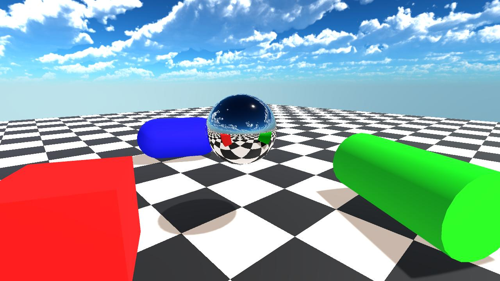
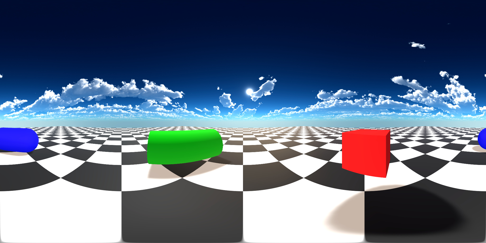
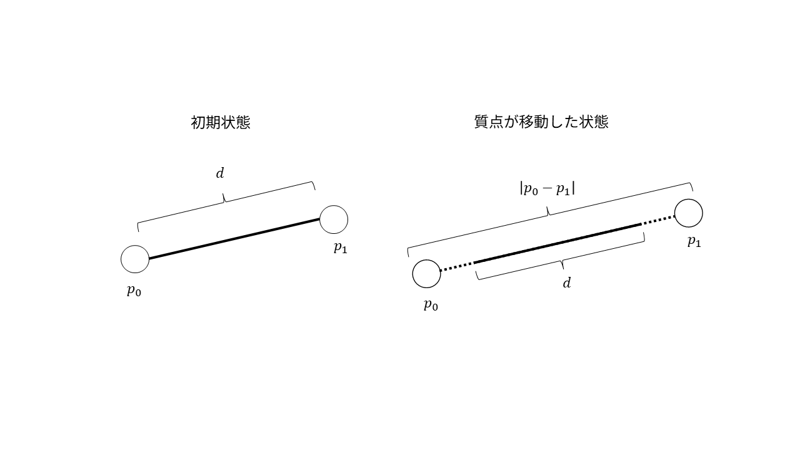
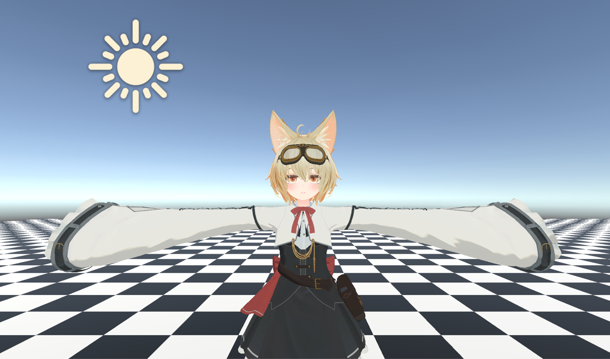
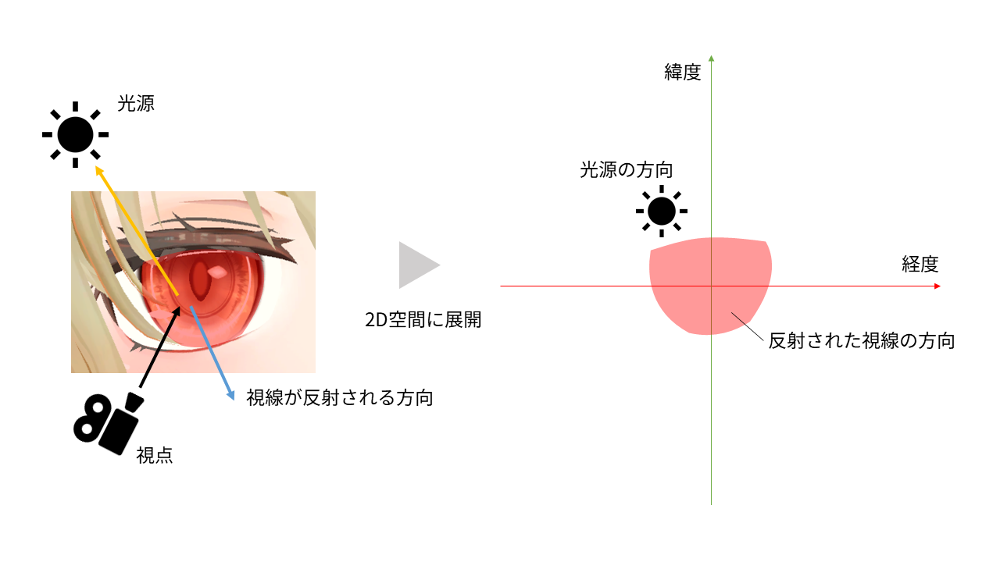
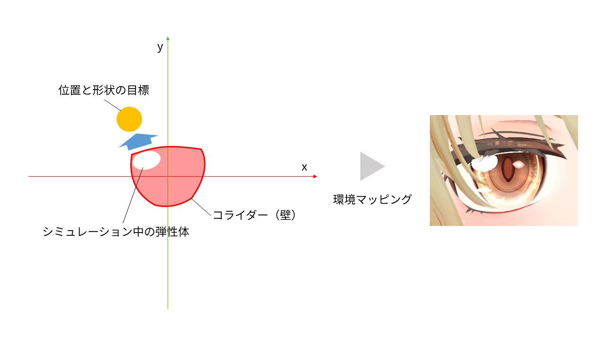

【修士研究】環境マッピングと物理シミュレーションを組み合わせて、アニメ調3Dキャラクターの目のハイライトを生成する
最終更新日: 2026.04.14
▶ WebGPU版のデモはこちらから
※ 推奨環境 PC版 Google Chrome・Microsoft Edge（113以降）
※ 上記の環境でも一部環境では動作しないことがあります。
概要
この資料は、私が修士研究として取り組んでいる「アニメ調3Dキャラクターの目のハイライトの生成手法」についての概要と、研究成果を実装したブラウザ版デモについての技術解説です。
本研究は、環境マッピング[1]と Position Based Dynamics
(PBD)[2]による物理シミュレーションを組み合わせた新しいハイライト形状の生成手法を提案します。ハイライトを弾性体としてモデル化し、「視点と光源に追従する」「黒目の上からはみ出さない」「デザインの形状を保つ」という3つの制約を、PBDで同時に解くことで、物理的に自然かつ手描きアニメらしい表現を両立しています。
また、実装にあたって高速化・最適化の工夫をしています、WebGPUを用いてブラウザで動作するデモを実装しました。
背景と目的
手描きアニメにおける目のハイライトの役割
ハイライトは、物体の表面に光源が反射することで明るく光る部分のことを指します。しかし、アニメ表現におけるキャラクターの目のハイライトは、単なる物理現象ではなく、キャラクターの感情や個性を象徴する重要な役割を持っています。
手描きアニメでは、通常のシーンではシンプルに描かれることが多い一方、顔のアップや重要なシーンでは、ハイライトの細かい形状や動きまで丁寧に作り込まれることがあります。手描きアニメでは、アニメーターの裁量次第で、状況に応じた最適な形状を描くことができます。
また、Live2Dモデル
引用：アニメ『私に天使が舞い降りた！』（動画工房）より
引用：アニメ『負けヒロインが多すぎる！』（A-1 Pictures）より
既存の3D表現の課題
最近では、CGアニメやゲーム、VTuberのアバターとして、アニメ調3Dキャラクターが広く用いられていますが、目のハイライトの表現方法として主に以下の2つの手法が用いられています。
- テクスチャマッピング：形状の自由度は高いが、静的
- モーフィング：まばたきに同期して上下に動くものが多く見られるが、視点や光源に追従せず、動きのパターンも限られる
引用：
また、また、反射マッピングを用いてハイライトを動的に生成する手法も存在しますが、ハイライトを黒目の領域内に収めながら形状を維持することが難しく、特にハイライトが領域の境界に衝突した際に形状が崩れてしまうという問題があります。
このように、物理的な反射の説得力とアニメらしいスタイル・形状の維持を同時に実現する手法は、これまで存在しませんでした。
本研究の目的
本研究では、以下の3つの条件を同時に満たす、アニメ調3Dキャラクター向けのリアルタイムハイライト生成手法の実現を目的とします。
- 視点と光源に追従する
- 黒目の上からはみ出さない
- デザインの形状を保つ
手法
概要
本手法は、環境マップをPBDで修正する。
まず、ハイライトの形状をテクスチャで入力し、パーティクルの配置・形状保持のための拘束条件を設定しておきます。
毎フレーム実行する処理のフローは以下の通りです。
- 目のメッシュに映り込む範囲を計算
- 光源の方向
- 制約条件を満たすようにPBDシミュレーションを実行し、パーティクル位置を更新
- 補正後のパーティクル位置をもとに環境マップを更新し、目のメッシュにハイライトをレンダリング
3つの条件を満たすハイライトを描画することができます。
前提知識
環境マッピング（反射マッピング）
物体の表面に反射する周囲の環境を描画する手法です。視点から物体表面を見た時の反射方向を計算し、その方向に対応する環境マップ上の色をサンプリングします。
本手法では、


▲環境マッピングのイメージ図
上：鏡面球に周囲の環境が反射として映り込んでいる様子。下：球の中心から見た360°周囲環境を、緯度・経度で2D画像にしたマップ。
Position Based Dynamics (PBD)
従来の物理シミュレーションが加速度を積分して位置を求めるのに対し、PBDは物体を複数のパーティクル（質点）でモデル化し、パーティクルの位置を制約条件に基づいて直接計算することで物理的な挙動をシミュレーションする手法です。
制約条件とは、パーティクルの位置が満たすべきルールのことです。例えば下図では、2つのパーティクル p0p_0
p0、p1p_1
p1 の間に「距離を dd
d に保つ」という制約が設定されています。p1p_1
p1 が移動して距離が dd
d からずれた場合、パーティクルの位置を直接補正することで制約を満たします。

▲環境マッピングのイメージ図
このような制約を毎フレーム適用し続けることで、ひもや布のような変形を伴う物体の動きを安定してシミュレーションできます。
引用：
本研究では、
各ステップの詳細
反射方向と光源の方向
目に映り込む範囲と光源の方向を計算し、環境マップにマークします。
例えば、以下のようなシーンについて注目します。

手法の概要
このとき、目に映り込む周囲の環境の範囲と、光源の方向をマークします。 （目の中心と対応する点が緯度経度0の原点に来るように座標変換）これは書くとややこしいかも このとき、まぶたによって見えない部分は切り取られていることに注意してください。そうすることで、Live2Dや既存のモーフィングのような、まばたきと同時に下がるような動作を実現することができます。

手法の概要
PBDシミュレーションの実行
目に映り込む範囲に光源がないので、このまま真面目に反射を計算しても、目にハイライトは入りません。そこで、先ほどの3つの条件を制約条件として、PBDシミュレーションを実行し、光源の位置や形状を修正します。 光源の形状をパーティクルでモデル化
条件1：視点と光源に追従する
これを達成するための制約条件 光源の相対的な方向の変化→パーティクルの目標位置の変化
条件2：黒目の上からはみ出さない
これを達成するための制約条件 映り込み領域の外側を、コライダー（衝突判定）として設定します。パーティクルをこのコライダーの外に出ないように拘束します。
条件3：入力形状の保持
これを達成するための制約条件 ハイライトが変形しすぎて入力形状が崩れないよう、入力形状を保持する拘束を適用します。拘束はShape Matchingと面積保持 理由 ShapeMatchingについてなどの詳細な説明は今回は書かない
これらの制約条件を、シミュレーションで同時に解くことで、条件を満たす（あるいは近い）パーティクル位置を得ることができます。

手法の概要
最後に、シミュレーション実行後のパーティクル位置に基づいて光源の形状を復元し、環境マッピングを実行することで最終的なハイライト形状を得ることができます。
結果
主に補足動画を引用して説明する。 ・比較（テクスチャマッピング、モーフィング、環境マッピング） ・様々な形状で可能 ・動きの自由度も調整可能（少し動くくらいがちょうどいい）
実装と最適化
物理エンジンの実装
本デモにおいて、物理演算は既存の物理エンジン（Unity標準機能や外部アセット）に頼るのではなく、PBD（Position Based Dynamics）のロジックをゼロから独自に実装しています。
さらに、この自作エンジンを最新APIであるWebGPUを用いてブラウザ上で動くように移植しました。
その理由は、国際学会でのポスター発表における強烈な原体験にあります。
アニメ調レンダリングに詳しい方には手法の面白さが伝わった一方で、そうでない方には研究の価値を直感的に理解してもらうのが非常に困難でした。
「どれだけ優れた手法でも、他人が手軽に触って体験できる形でなければ伝わらない」という学びから、誰もがURLを開くだけで体験できるブラウザ環境での動作を必須要件としました。
GPGPUを使った高速化
デモを簡単に実行できるようにするため、低スペックPCでも60fpsを出せるようにする。
WebGPUでComputeShaderを使う
PIXを使って、何に時間がかかっているか見てみる
ここでは、最も効果が大きかったものと、最も実装が難しかったものを解説する